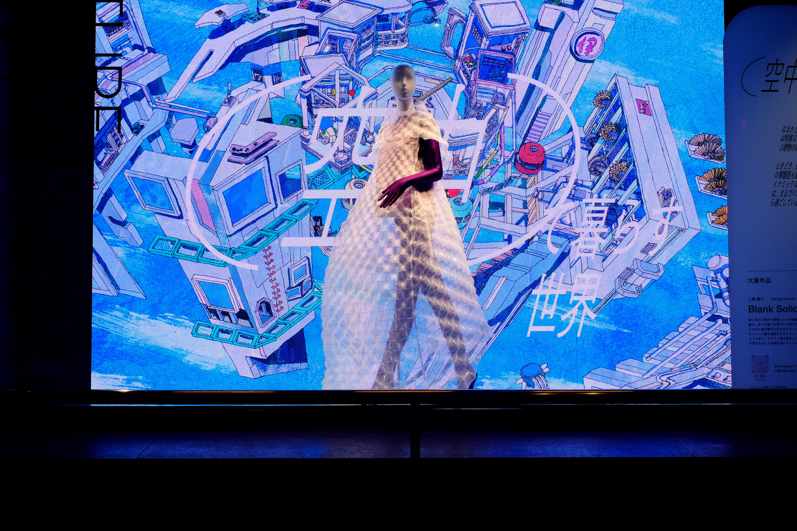
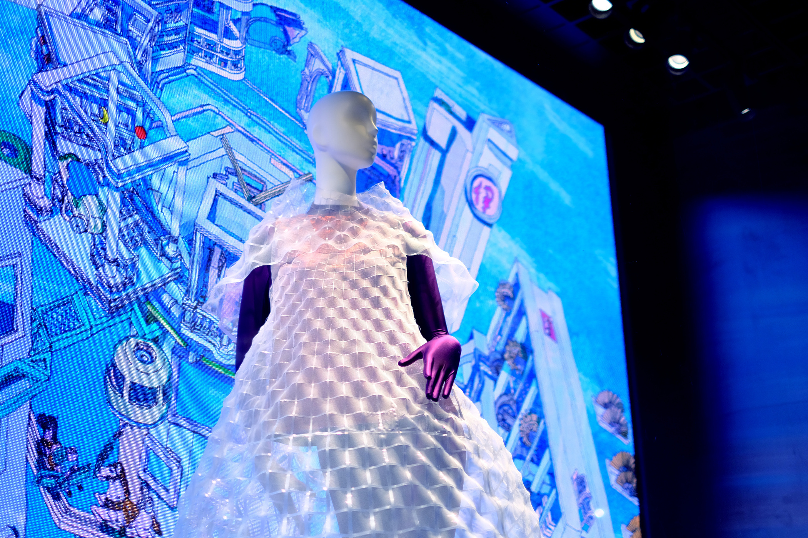
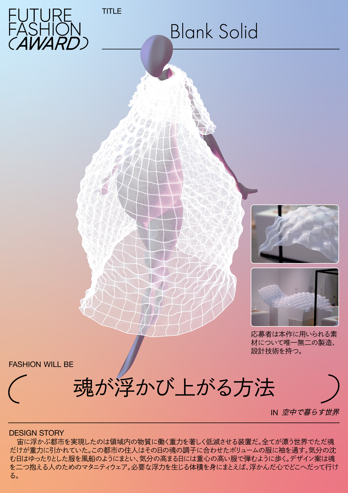

Blank Solid
2024
上條陽斗
生地制作補助：森野僚太
縫製：サルト株式会社
設定されたシナリオにおける未来のファッションを募集する三越伊勢丹の主催するFuture Fashion Awardでグランプリを受賞した作品。設定されたシナリオは「空中で暮らす世界」。
本作はActive Textile を用いて製造することを前提にデザインされた。実際の製作時には、開発しActive Textile の設計手法を応用している。
Design Story
宙に浮かぶ都市を実現したのは領域内の物質に働く重力を著しく低減させる装置だ。全てが漂う世界でただ魂だけが重力に引かれていた。この都市の住人はその日の魂の調子に合わせたボリュームの服に袖を通す。気分の沈む日はゆったりとした服を風船のようにまとい、気分の高まる日には重心の高い服で弾むように歩く。デザイン案は魂を二つ抱える人のためのマタニティウェア。必要な浮力を生じる体積を身にまとえば、浮かんだ心でどこへだって行ける。
keywords
Active Textile、服飾デザイン、逆問題
受賞
三越伊勢丹 FUture Fashion Award「空中で暮らす世界」大賞
展示
伊勢丹新宿店ショーウィンドウ，東京，2024
- 
- 
- 
3Dモデルでデザインした服を、Active Textileの製造手法、設計手法を応用して制作している。